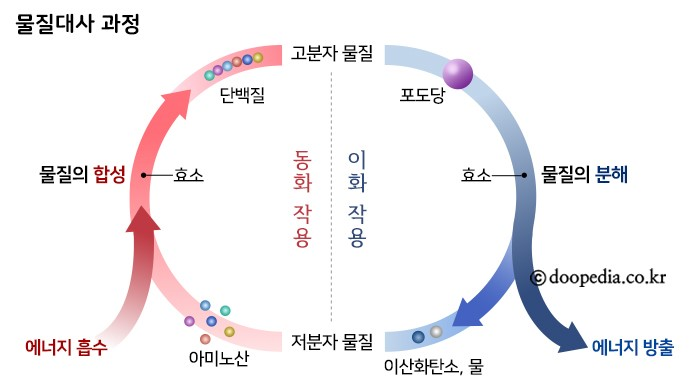
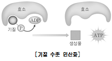
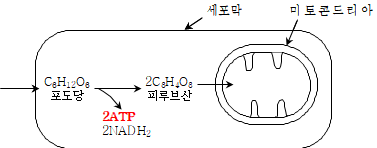
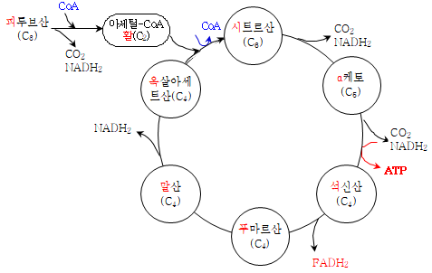
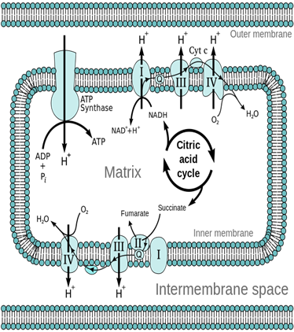
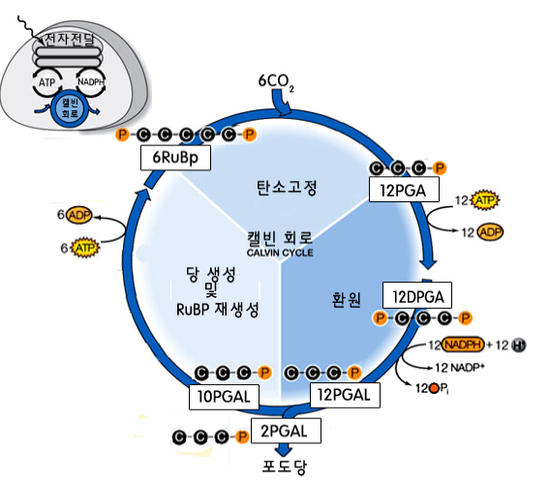
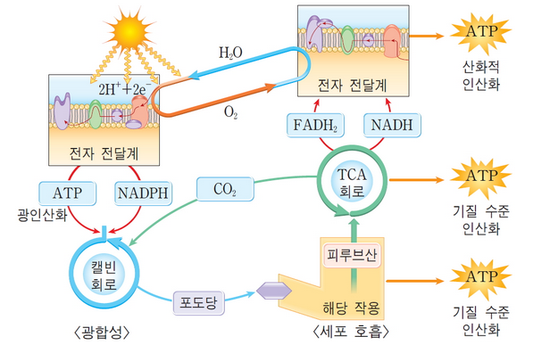

세포로의 여행 동영상 시청하기
↑'설정'>'자막'>'한국어' 를 클릭하시면 한국어 자막으로 영상 시청 가능합니다.
물질대사(metabolic process)
모든 생물은 주위 환경으로부터 자신에게 필요한 물질을 흡수한다. 흡수한 물질들을 이용해 자신에게 필요한 물질을 합성하기도 하고, 또는 물질을 분해하면서 그로부터 생명 활동에 필요한 에너지를 얻기도 한다.
물질대사는 크게 동화작용과 이화작용으로 나눌 수 있는데, 동화작용은 주위로부터 흡수한 저분자 유기물이나 무기물을 이용해 고분자 화합물을 합성하는 과정을 말한다. 동화작용을 위해서는 빛 또는 화학 에너지가 필요하다. 이화작용은 반대로 고분자 화합물을 저분자 유기물이나 무기물로 분해하는 과정을 말한다. 이화작용을 거치면서 생물체는 활동에 필요한 에너지를 얻게 된다.

1)이화작용
①세포호흡
□ 1단계 : 해당(解糖) 작용 ⇒ 세포(기)질에서 총 2ATP, 2NADH2 형성
※ 이유 : 포도당 분자가 커서 세포호흡 장소인 미토콘드리아로 들어갈 수 없기 때문에
▫ 세포(기)질에서 일어남. 산소가 필요하지 않음
▫ 탈수소효소 + 조효소(NAD) 사용
▫ 분해할 때 2ATP의 에너지를 사용하여 4ATP 생산 ⇒ 따라서 총 2ATP 생산
▫ 해당 작용은 효소가 기질에 작용하여 ATP를 생성하므로 기질 수준 인산화에 속함


□ 2단계 : TCA회로(시트르산회로) ⇒ 미토콘드리아 기질에서 총 2ATP, 8NADH2, 2FADH2, 형성
▫ 미토콘드리아 기질에서 일어남
▫ 탈수소 효소(脱水素酵素), 탈탄산 효소(脱炭酸酵素) 사용

□ 3단계 산화적 인산화
(1) 전자 전달계(Electron Transport System)
① 전자 전달계 : NADH, FADH2에 있던 고에너지 전자가 미토콘드리아 내막의 전자 전달 효소에 차례로 전달되는 경로이다.
② 전자 전달 과정은 산화 환원 반응으로, 효소 복합체의 전자 친화력 차이에 의해 전자가 이동되며, 이때 고에너지 전자가 가지고 있던 에너지가 단계적으로 방출되고 최종적으로 전자는 H+과 함께 산소에 전달되어 물 분자가 합성된다.
(2) 화학 삼투
① 화학 삼투 : 미토콘드리아 기질과 막간 공간의 H+ 농도 기울기를 통해 ATP가 합성되는 과정을 말한다.
② H+ 농도 기울기가 형성되는 과정
• 전자 전달계에서 고에너지 전자가 전달될 때 방출된 에너지를 이용하여 미토콘드리아 기질에서 내막과 외막 사이의 공간으로 H+이 수송된다.
• 그 결과 미토콘드리아 막간 공간과 기질 사이에 H+ 농도의 기울기가 생긴다.
• 막간 공간의 H+이 ATP 합성 효소를 통하여 기질로 확산되면서 ATP를 합성한다.
③ 산화적 인산화 : 전자 전달계와 화학 삼투를 통해 ATP가 생성되는 과정은 산화 환원 반응에 의해 이루어지므로 산화적 인산화라고 한다.
④ 전자 전달계의 정리
• 전자 전달계에서 전자의 최종 수용체는 산소이며, 물이 1분자 생길 때마다 NADH 1분자로부터 2~3ATP가, FADH2 1분자로부터 1~2ATP가 생성된다.
• 따라서 포도당 1분자가 해당 작용과 TCA 회로를 거치면서 생성한 10NADH와 2FADH2는 산화적 인산화에 의해 최대 34ATP를 합성한다.

⑤ 세포 호흡을 통한 ATP 생성
• C6H12O6 ＋ 6O2 ＋ 6H2O + 38ADP → 6CO2 ＋ 12H2O ＋ 38ATP
• 해당 작용(세포질) : 기질 수준 인산화로 2ATP와 2NADH를 생성한다.
• TCA 회로(미토콘드리아 기질) : 기질 수준 인산화로 2ATP와 8NADH와 2FADH2 생성한다.
• 전자 전달계(미토콘드리아 내막) : 산화적 인산화로 10NADH와 2FADH2가 전자 전달계를 거쳐 O2에 전달 과정에서 최대 34ATP가 생성된다.
• 산화적 인산화는 세포의 유형에 따라 생성되는 ATP의 양이 다를 수 있다.
②광합성
광합성은 세포호흡의 순차적인 반대과정임

③물질대사 모식도(세포호흡+광합성)
